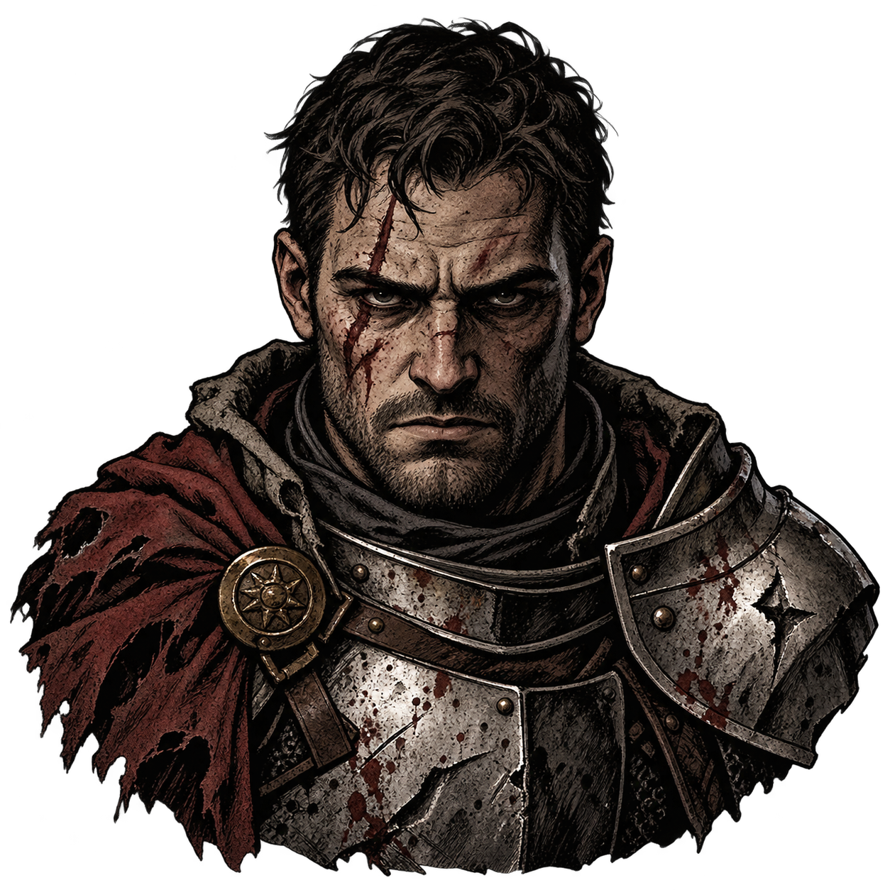
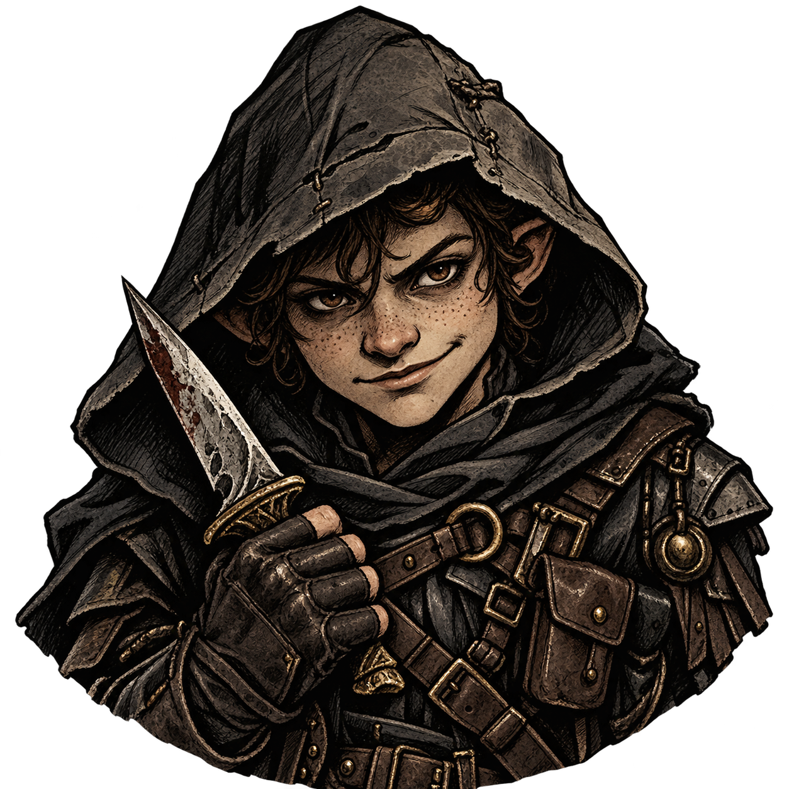
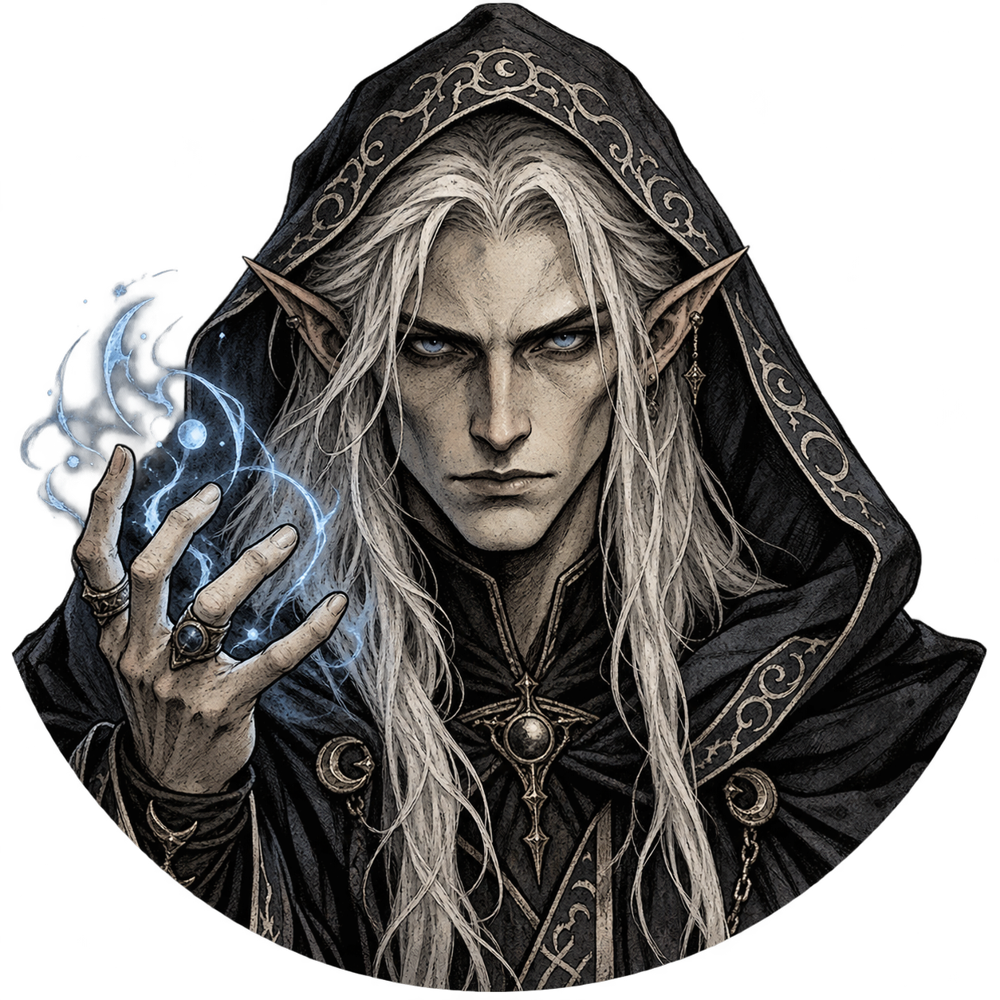
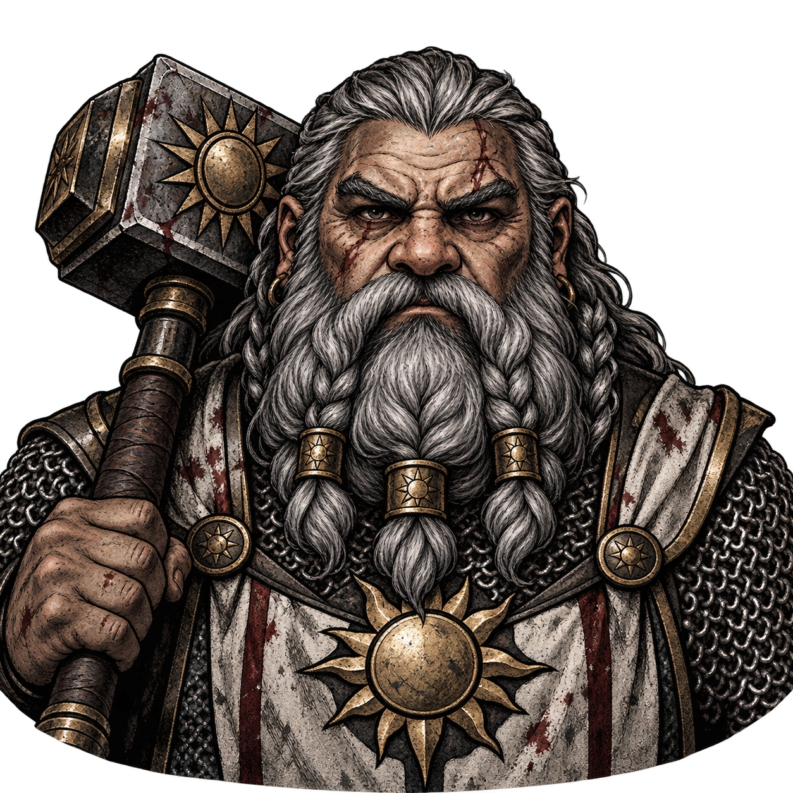

Dark Corner — Class portrait reviewBarbarian
48 px fight token · 160 px round · 160 × 200 Quick start crop

Human Fighter
Halfling Rogue
Elf Wizard
Dwarf ClericHuman Barbarian 1Human Barbarian 2Elf Barbarian 1Elf Barbarian 2Dwarf Barbarian 1Dwarf Barbarian 2Halfling Barbarian 1Halfling Barbarian 2 Ranger
48 px fight token · 160 px round · 160 × 200 Quick start crop
Human FighterHalfling RogueElf WizardDwarf Cleric
Human Ranger 1Human Ranger 2Elf Ranger 1Elf Ranger 2Dwarf Ranger 1Dwarf Ranger 2Halfling Ranger 1Halfling Ranger 2 Paladin
48 px fight token · 160 px round · 160 × 200 Quick start crop
Human FighterHalfling RogueElf WizardDwarf Cleric
Human Paladin 1Human Paladin 2Elf Paladin 1Elf Paladin 2Dwarf Paladin 1Dwarf Paladin 2Halfling Paladin 1Halfling Paladin 2 Warlock
48 px fight token · 160 px round · 160 × 200 Quick start crop
Human FighterHalfling RogueElf WizardDwarf Cleric
Human Warlock 1Human Warlock 2Elf Warlock 1Elf Warlock 2Dwarf Warlock 1Dwarf Warlock 2Halfling Warlock 1Halfling Warlock 2 Monk
48 px fight token · 160 px round · 160 × 200 Quick start crop
Human FighterHalfling RogueElf WizardDwarf Cleric
Human Monk 1Human Monk 2Elf Monk 1Elf Monk 2Dwarf Monk 1Dwarf Monk 2Halfling Monk 1Halfling Monk 2 Druid
48 px fight token · 160 px round · 160 × 200 Quick start crop
Human FighterHalfling RogueElf WizardDwarf Cleric
Human Druid 1Human Druid 2Elf Druid 1Elf Druid 2Dwarf Druid 1Dwarf Druid 2Halfling Druid 1
Halfling Druid 2
Bard
48 px fight token · 160 px round · 160 × 200 Quick start crop
Human FighterHalfling RogueElf WizardDwarf Cleric
Human Bard 1
Human Bard 2
Elf Bard 1
Elf Bard 2
Dwarf Bard 1
Dwarf Bard 2
Halfling Bard 1
Halfling Bard 2
Sorcerer
48 px fight token · 160 px round · 160 × 200 Quick start crop
Human FighterHalfling RogueElf WizardDwarf Cleric
Human Sorcerer 1
Human Sorcerer 2
Elf Sorcerer 1
Elf Sorcerer 2
Dwarf Sorcerer 1
Dwarf Sorcerer 2
Halfling Sorcerer 1
Halfling Sorcerer 2